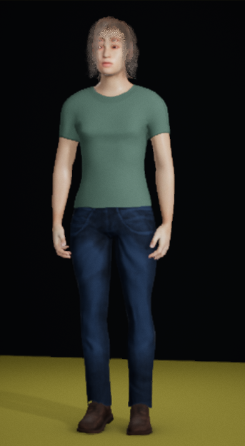
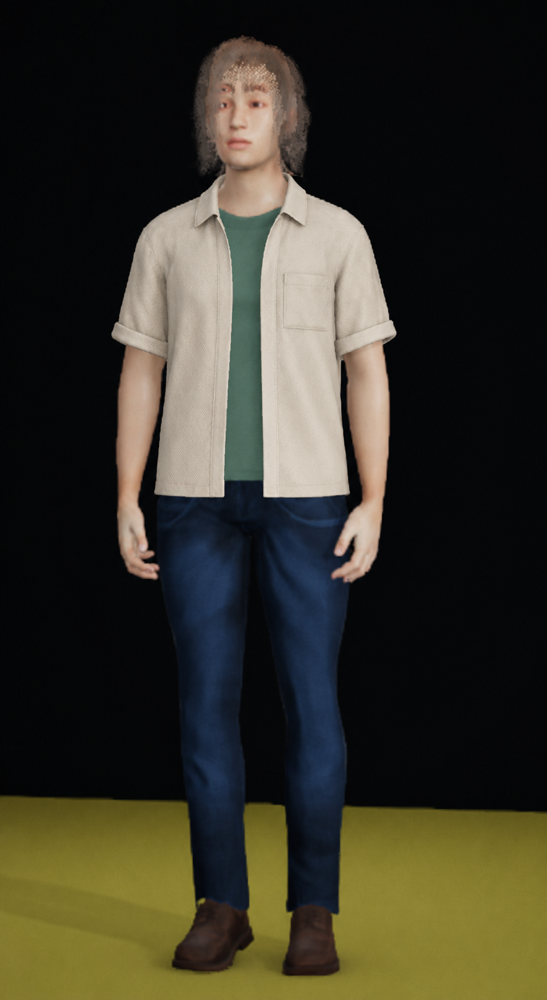

One open overshirt illustration
Isolated synthetic concept. Refused as a preserved-character edit. The collar, open plackets, pocket, cuffs and upper-hip hem communicate a possible layered outfit. The exposed tee neckline and face were reinterpreted, so this raster is not an accepted asset or authoring target.
These panels show complete original files at their own resolutions. Display resizing does not register their pixels or qualify fit, contact, materials or runtime behaviour. No new native rendering occurred.

Actual native edit source · 343×625
One generated illustration · 928×1694 · rejected preservation contractOriginal face and neckline context · Root's independent review · Independent critic · Written layer responsibilities · Exact admitted prompt · Receipt and limits
One built-in imagegen edit. Accepted character assets and wardrobe defaults unchanged. Retain the written design idea; any future garment design or construction needs a new explicit contract.